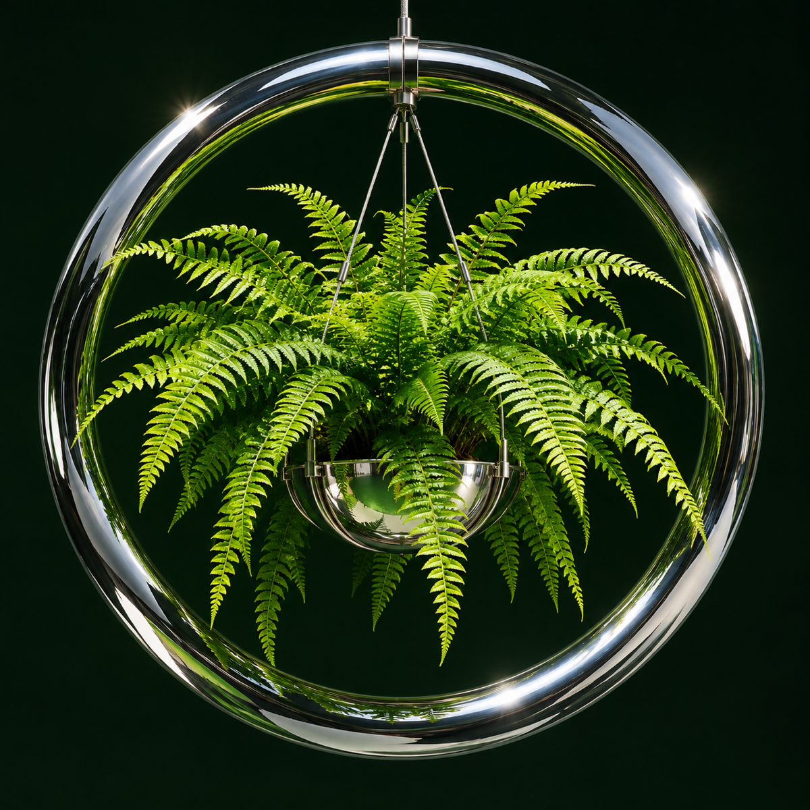

THE CITY
IS A LIVING
THING.
Let's make a little more room for the wild. A future-facing experiment in growing together, wherever we are.
DESIGN YOUR PATCH ✳
SOME ARE GROWN.
A LITTLE WILD
GOES A LONG WAY.
From a windowsill to a rooftop, every patch is a chance to imagine the city differently. Future Garden is a fictional field station for people who believe the future should have more leaves in it.
Look closer.
Find the overlooked places where something green might belong.
Start small.
A single pot can be the beginning of a different relationship with a place.
Grow together.
Imagine more generous cities, one little patch at a time.
GIVE YOUR
SPACE A
GROW.
Tell us what you’re working with. We’ll imagine a little plant community for your corner of the city.
Illustrative ideas only. Check local conditions and plant safety before growing.The sunny sill
Imagine basil, thyme, and compact marigolds catching the light in a row of small pots.
WILD IS
A WAY OF
THINKING.
The most interesting future isn’t a pristine city without a leaf out of place. It’s one where nature gets a say: in the cracks, on the rooftops, and right outside our windows.
IMAGINE YOUR PATCH